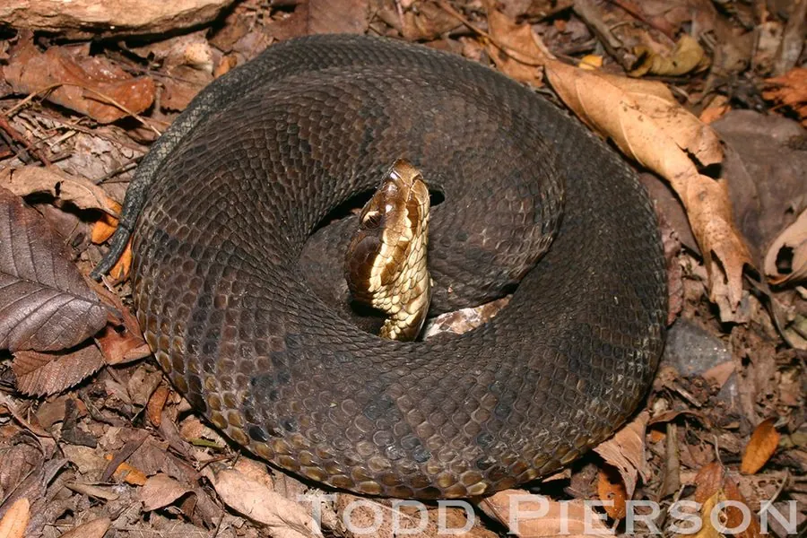

爬行动物 · 动物界
棉口蛇 Agkistrodon piscivorus

北美东南部的水栖毒蛇，口腔内部呈白色、受惊时张口示警，毒性较强，被咬须立即就医，属于较危险的毒蛇。
- 分类
- 门脊索动物门纲爬行纲目有鳞目科蝰科属蝮属
- 栖息环境
- 美国东南部的沼泽、河流、湖泊、湿地与水边灌丛
- 地理分布
- 美国东南部沿海平原与密西西比河流域
- 保护级别
- IUCN 无危（LC）；非中国原产，在中国无保护级别
物种志
棉口蛇体长 0.8–1.8 米，身体较粗壮，头部略呈三角形，成体体色多为暗褐或黑色，幼体花纹更明显并带黄色尾尖；它最显著的特征是口腔内部呈纯白色，受惊时张开嘴示警，“棉口蛇”之名由此而来。它善于游泳，能长时间在水中活动。
它分布于美国东南部的沼泽、河流、湖泊和湿地，半水栖，多在夜间和晨昏活动，捕食鱼类、蛙类、龟类、鸟类和小型哺乳动物。它是卵胎生蛇类，每胎产 1–16 条幼蛇。棉口蛇毒性较强，毒液含出血毒素，被咬后局部会明显肿胀疼痛，须立即就医；它常在水边晒太阳，受到惊扰时会张口示警。它有时会主动靠近人类，遇到时保持距离，不要试图驱赶或捕捉。
形态与习性
- 食性鱼类、蛙类、龟类、鸟类和小型哺乳动物
- 体长0.8–1.8 m
- 寿命约 15–20 年
- 繁殖卵胎生，每胎 1–16 条
- 活动节律夜间和晨昏活动，半水栖
- 毒性毒性较强，被咬须立即就医
趣味知识
- 棉口蛇受惊时会张开嘴，露出纯白色的口腔内部示警。
- 它是半水栖蛇类，能在沼泽和河流中长时间游泳。
- 幼年棉口蛇的尾尖呈黄色，会扭动尾巴吸引猎物靠近。